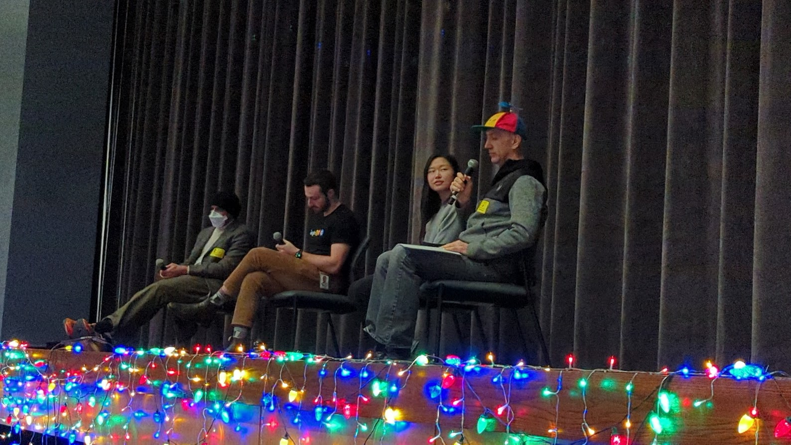
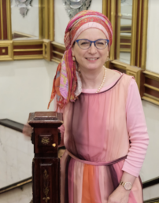
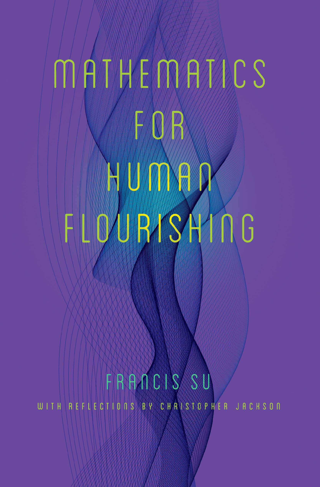
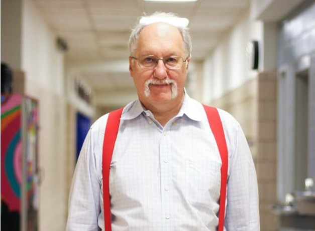

The Official Publication of the Stuyvesant Math and Computer Science Department since 1927
Stuyvesant Faculty Perspectives: Mr. JonAlf Dyrland-Weaver, Class of 2001: Computer Science Principles, in Class and in Daily Life
Continue reading
Continue reading
Foreword: Professor Joel Lewis - Mathematics, Stuyvesant, and Beyond: Change the Question, Continue Searching for Beauty
Continue reading
Continue reading
Google Panel 2022: Peering into the Work World of Computer Scientists
Continue reading
Continue reading

Questions and Answers with Distinguished Guest Dr. Jeffrey N. Heinz:
The Role of Mathematical Linguistics, the Rise of A.I., and His Favorite Projects
Continue reading
Continue reading
Foreword: Do You Want to Make a “Transformational Impact”?
Michael Develin Shares his Advice and his Decades of Academic and Employment Experience
Continue
reading
Stuyvesant Faculty Perspectives: Mr. Patrick Honner: Mathematics is Like a Great Book that Never Ends
Continue reading
Continue reading
Researchers Identify ‘Master Problem’ Underlying All Cryptography
by Distinguished Guest Contributor Erica Klarreich, award-winning journalist
Continue reading
Continue reading
Stuyvesant Math and Computer Science Achievements: 2021-2022
Continue reading
Continue reading
Questions and Answers with Distinguished Guest Dr. Lisa Su, President and CEO of Advanced Micro Devices, Inc. (AMD), as well as the first woman to receive IEEE's highest semiconductor award
Continue reading
Continue reading
Foreword: Where Will Math Lead You? Over 50 Years of David Harbater's Mathematical Journey and Insight
By Professor David Harbater, Class of 1970 Continue reading
By Professor David Harbater, Class of 1970 Continue reading
Stuyvesant Faculty Perpectives: Mrs. Deena Avigdor: Seeing the Beauty of Mathematics and New York City
By Debolina Kunda, Josephine Lee Continue reading
By Debolina Kunda, Josephine Lee Continue reading

Stuyvesant Math and Computer Science Achievements: 2020-2021
Continue reading
Continue reading
Mathematics for Human Flourishing
By Distinguished Guest Contributor, Professor Francis Su Continue reading
By Distinguished Guest Contributor, Professor Francis Su Continue reading

Foreword: Math Research - A Marathon, an Obsession, and a
Beautiful Picture
By Professor Michael Hutchings, Class of 1989 Continue reading
By Professor Michael Hutchings, Class of 1989 Continue reading
Stuyvesant Faculty Perspectives: Mr. Peter Brooks: A Crafter Who Crafts His Own Universes in a Machine
By Debolina Kunda Continue reading
By Debolina Kunda Continue reading

Stuyvesant Alumni Perspectives: Caitlin Stanton, Class of 2016
By Isabelle Lam Continue reading
By Isabelle Lam Continue reading